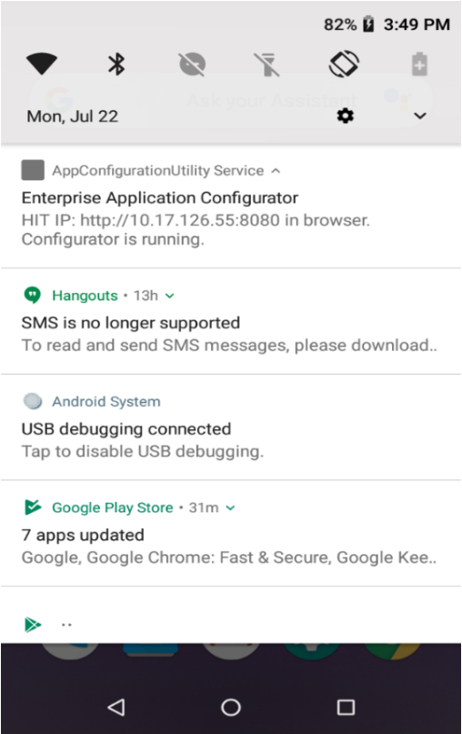
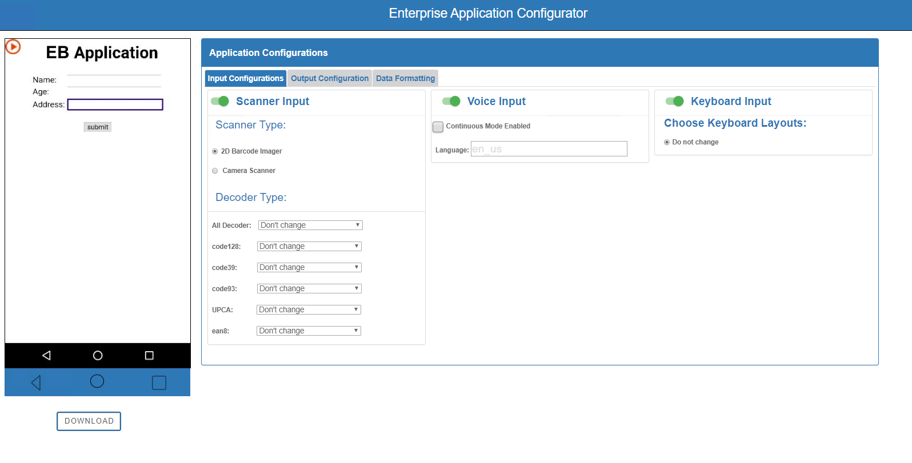
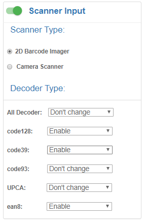
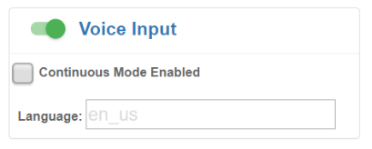
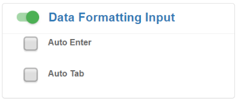

Overview
Enterprise Application Configurator (EAC) is a companion utility for Enterprise Browser that simplifies DOM injection, which can add capabilities to a running EB app without changing the source code. This tool can map EB fields or buttons to Zebra devices such as scanners, printers and keyboards and or can voice-enable fields for spoken input and/or output.
EAC is a browser-based solution that presents an easy-to-use GUI for creating DIM injection configuration files and does not require changes to the EB app's source code or access to a target’s application server. EAC is designed to help companies that use SAP ITSmobile and similar solutions easily modify legacy apps.
Requirements
- Computer running Windows 8 or Windows 10 with Google Chrome installed
- Zebra device that supports Enterprise Browser
See Zebra Support Portal EB page for supported devices - EB 2.6 (or later) installed on device
- Computer and device on the same IP subnet
AppConfigurationUtility.apkscreen streaming service([download]()) LINK TO COME
NOTE: EAC does not support apps that employ shortcuts or multi-session tabs.
Step 1 - Install and Set up
To set up Enterprise Application Configurator:
Push the
AppConfigurationUtility.apkfile to the device, launch and tap "START NOW" to grant permission to capture the screen.Add the node below code to the target EB app's
Config.xmlfile just before the <Applications> node:<DOMInjectionUtility> <appConfigEnabled value="1"/> </DOMInjectionUtility> <Applications> <Application> ...Push the modified
Config.xmlfile to the device in the following location:
/sdcard/Android/data/com.symbol.enterprisebrowser/Launch Enterprise Browser on the device.
Pull down the Notification bar on the device to obtain the IP address for the screen stream:
 Click image to enlarge; ESC to exit.In Chrome on the Windows computer, enter the IP address and port number obtained in Step 5 into a new browser window.
NOTE: Supports only Google Chrome running on Windows 8 or 10.
After a moment, a splash page appears with a section similar to the image below. Enter the EB app type:
 Click image to enlarge; ESC to exit.
Click image to enlarge; ESC to exit.
After a moment, the browser window displays the EB app and configuration options similar to the image below:  Click image to enlarge; ESC to exit.
The tool is now ready to accept field mappings for the EB app.
IMPORTANT: The
AppConfigurationUtility.apkapp must be uninstalled to run EB apps in a production environment on that device.
Step 2 - Map App to Functions
DOM injection works by inserting CSS, JavaScript and/or meta tags into a running app, enhancing the app with the functionality contained within the inserted code. EAC converts the field and/or key mappings made through its GUI into the necessary CSS, JavaScript and/or meta tags to be inserted, saving that code in a file. Once that file is pushed to the target device, the desired functionality is available next time the app is launched.
EAC is ready to use when its two-panel display appears in the workstation's browser similar to the image below. The process begins by clicking on a field in the left-hand app window and assigning it an input or output function on the right. Selections are saved automatically. Clicking the "DOWNLOAD" stores all settings into the file for deployment to the device(s).
Click image to enlarge; ESC to exit.
To use Enterprise Application Configurator:
In the EB application window, click on a field or button to be modified.
Input and output options are now available to be selected.
Select the desired input, output or processing function.
Selections are saved automatically.Repeat Steps 1 and 2 until all fields and/or buttons are "trained" as desired.
Click the "DOWNLOAD" button to save the settings to a deployment file called
appconfiguration.txt.
IMPORTANT:DO NOT RENAME THIS FILE.Push the file to the following location on a different device:
/sdcard/Android/data/com.symbol.enterprisebrowser/Add the node below code to the target EB app's
Config.xmlfile just before the <Applications> node:<DOMInjectionUtility> <appConfigEnabled value="2"/> </DOMInjectionUtility> <Applications> <Application> ...Test the app and its new functions.
Repeat Steps 1–7 until the app performs as desired.
IMPORTANT: The
AppConfigurationUtility.apkapp must be uninstalled to run EB apps in a production environment on that device.
The app and DOM injection enhancements file are now ready for deployment.
Step 3 - Set Inputs and Outputs
Scanner Input
This configuration allows to map scanner configuration to any input area. Which mean, if we map this configuration to any input field, scanner will be enabled automatically when that input field will be focused. Now upon scan, data will be fed in the field.
Currently we are supporting basic configurations of scanner in the tool. Like, scanner type (camera or 2D imager), decoder types (code128, code 39 etc.) . We can find all such properties on tool upon selecting the scanner check box.

Click image to enlarge; ESC to exit.
Note: in order to make it work. Make sure to have below configuration in EB Config.xml.
<usedwforscanning value="0"/>
Voice Input
This configuration allows to map voice input configuration to any input area. Which mean, if we map this configuration to any input field, voice input will be enabled automatically when that input field will be focused. Now upon user utterance of word (user voice), data will be fed in the field.
Note: Mapping any feature to input field will only work if input type =”text”, “password” .
It will not work for
<textarea />
Currently we are supporting basic configurations of voice input in the tool. Like, continuous mode (if we want continuous input from user then check the box. If we uncheck this box, it will just take the first input from user and voice recognition will be stopped), and language. We can set language from list of supported language from android. e.g. “en_us”.

Click image to enlarge; ESC to exit.
Note: in order to make it work. Make sure to have below configuration in EB config.xml.
<asrenabled value="1"/>
Keyboard
This configuration allows to map specific keyboard to any input area. Which mean, if we map this configuration to any input field, those special kinds of keyboard will pop up to get input, when the input field will be focused.
For example, we can select function key layout for one field while numeric keyboard for other input. We can map it accordingly. We can even disable keyboard, if we toggle the enabled switch to disabled.
Note: in order to make it work. Make sure that Enterprise keyboard from zebra is installed in the device and custom layouts are pushed in enterprise directory. So, Layouts.zip file must be pushed in ‘/enterprise/device/settings/ekb/config/’ directory.(check more details on how to use custom layouts in EKB in EKD documentation).
Once above thing is correctly done, we will get all layouts listed in the tool, and we can select the desired layout.
 Click image to enlarge; ESC to exit.
Click image to enlarge; ESC to exit.
Voice Output
This configuration allows to map voice output configuration to any input area. Which mean, if we map this configuration to any input field, voice prompt will be heard automatically when that input field will be focused. For example, “Speak product number”.
Currently we are supporting basic configurations of voice output in the tool. Like voice text, pitch of the utterance, volume, rate and language. We can set language from list of supported language from android. e.g. “en_us”.
Note: Make sure you are not using any double- inverted commas(“) or single inverted comma(‘) in the voice text area.Pitch, volume and rate should be float value.
 Click image to enlarge; ESC to exit.
Click image to enlarge; ESC to exit.
Note: in order to make it work. Make sure to have below configuration in EB config.xml.
<ttsenabled value="1"/>
Data Formatting
This configuration allows to map voice input formatting to any input area. Which mean, if we map this configuration to any input field, cursor will automatically auto enter or auto enter to next field, when that input field gets keystroke data.
Note : This features will be observed only when keystroke input is fed in the input field. i.e. Auto Tab and Auto Enter only work when you map the input configuration (voice input,scanner) along with data formatting.

Click image to enlarge; ESC to exit.
Map a Printer
We can also configure a button to print using zebra printers. Above picture shows, how can we select a button and then add printer on it. *Note: Printer functionality should be mapped preferably with buttons. *Note: Before using printer functionality in production, you must pair the printer with device first else, you may see continuous hourglass on the screen.
 Click image to enlarge; ESC to exit.
Click image to enlarge; ESC to exit.
This tool supports all kind of printers i.e. bluetooth, wifi and USB. In order to add Bluetooth, printer, we must select printerType as Bluetooth and need to add mac number of Bluetooth printer in IP/Mac field. IP address must be feeded, in case of wifi printer. Then we can send a script variable in 3rd field. Script should be well formed and contains only single quotes(‘) as below. Note: In order to select any button (and prevent the actual work of the button) to map printer, we need to double tap it.
'^XA^FO20,20^AD^FD'+document.getElementById('yourId').value+'^XZ'
Note: Make sure you are not using any double- inverted commas(“) in the tool. For example your id must be with single inverted comma as shown above. We can observe that, script is a ZPL script (we can form our own. Above snippet is just an example). We can see that middle part of the script is a dynamically getting value from a text area. So, this should be handled as per requirement.
Note: If button is performing any other task, then while training we need to double click it to prevent its original action, so that we will be able to map printer functionalities on them.
If button is navigating current page to some other page on its click, then in production environment the behavior of this functionality is unknown. Hence, we should prefer using buttons that does not navigates or changes its web page.
So, to use this tool, we need to understand two major things
- For any EB app running on browser, either the
- The URL is unique (e.g. https://abc.com/contacts) or
- URL is not unique but just session ids are getting appended on URLs (e.g. sap URLs).
If URL is unique, we need to select the No training on the tool.
If URL is not unique, we need to Yes(refer image on previous page)
Steps to run the tool:
Run the EnterpriseBrowser on the device and make sure inside Config.xml below code is enabled. If value is other than 1, it will not work.
<appConfigEnabled value=”1”/>Select appropriate configuration type in the desktop tool.
Now you can see the live screen of the tool. Interaction will also be enabled now on the device screen area. But still it will not enable the configurations section on the right.
Next step is to focus on any input field or button , and now it will enable the tool to map that field with zebra capabilities.
Keep on mapping the field as per need and , when done, you can download the configuration file.(appconfiguration.txt)
Other Settings
Indicator configuration:
While using this tool, with configuration <appConfigEnabled value="1"/>, an indicator is shown on the screen in EnterpriseBrowser(Refer above pictures and observe left-top side of the phone screen in the tool). This is just and indicator to show, whether we are in training mode or not.
This image can be further configured, like setting its left, top, height and width. We can even change image shown for this indicator.
As given in below snippet, indicator’s tag must be used with <appConfigEnabled value=”1”/> tag. If we set appConfigEnabled tag’s value “2”, then EB will run on production mode and, indicator will not be shown irrespective of any values/configuration.
If <indicatorEnabled> – value=”1”: indicator will be shown
value=”2”: indicator will not be shown
If <indicatorLeft> – value=”20”: indicator’s left coordinate will be set to given value (in px)
value=””: indicator’s left coordinate will be set to default
If <indicatorTop> – value=”20”: indicator’s top coordinate will be set to given value (in px)
value=””: indicator’s top coordinate will be set to default
If <indicatorHeight> – value=”50”: indicator’s height will be set to given value (in px)
value=””: indicator’s height will be set to default
If <indicatorWidth> – value=”50”: indicator’s width will be set to given value (in px)
value=””: indicator’s width will be set to default
If <indicatorImage> – value=” %PATH%”: indicator’s image will be set from given path
value=””: indicator’s image will be set to default
<DOMInjectionUtility>
<appConfigEnabled value="1"/>
<indicatorEnabled value="1"/>
<indicatorLeft value="300"/>
<indicatorTop value="200"/>
<indicatorHeight value="60"/>
<indicatorWidth value="90"/>
<indicatorImage value="file://%INSTALLDIR%/myimage.png"/>
</DOMInjectionUtility>
TROUBLESHOOTING
 Click image to enlarge; ESC to exit.
Click image to enlarge; ESC to exit.
If value is other than 1, it will not work.
<appConfigEnabled value=”1”/>
Important points to Note for the tool uses:
- If Printer is mapped to any input field make sure to connect Bluetooth printer on advance to make it work in production.
- Make sure that in EnterpriseBrowser’s Config.xml file below tag is enabled:
- for text area we are not support the tool
- device screen should change as per device orientation
- Downloaded file (.txt file) name should be renamed as "appconfiguration.txt"
- “importing feature” is not there. suppose user set some configurations in on field then set some other configurations in other field again if user wants to change previous changes it won't be there.
Note: If any custom layout which is mapped to input field is visible due to being focused, and Enterprisebrowser is sent to background. Later if EB is taken in foreground from recent app or from launcher. In this case, default layout will be visible. From second click onwards, mapping will work as it is.